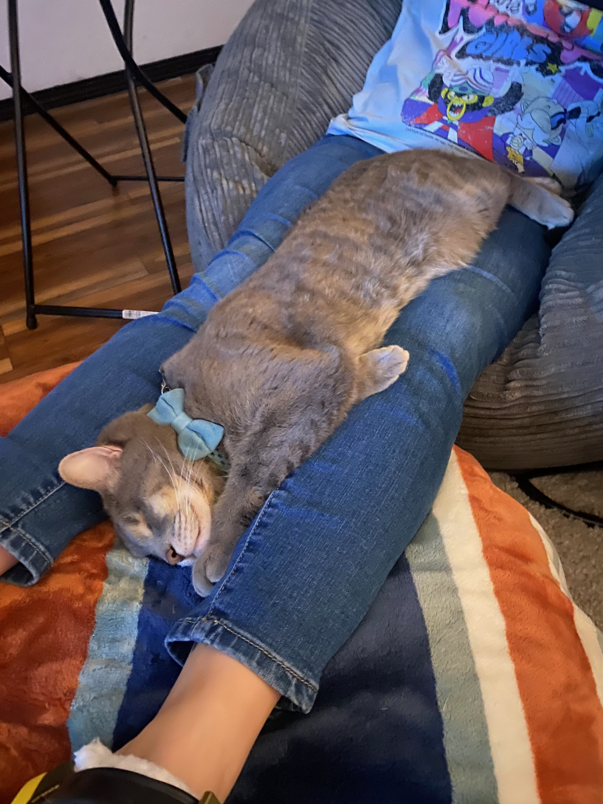
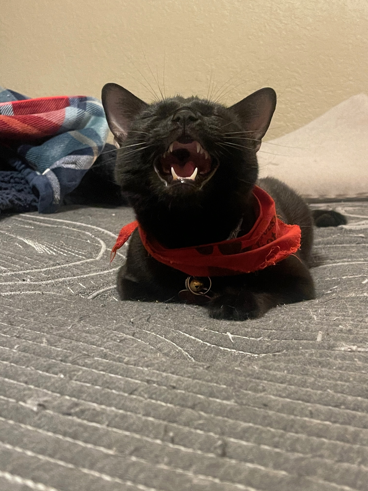
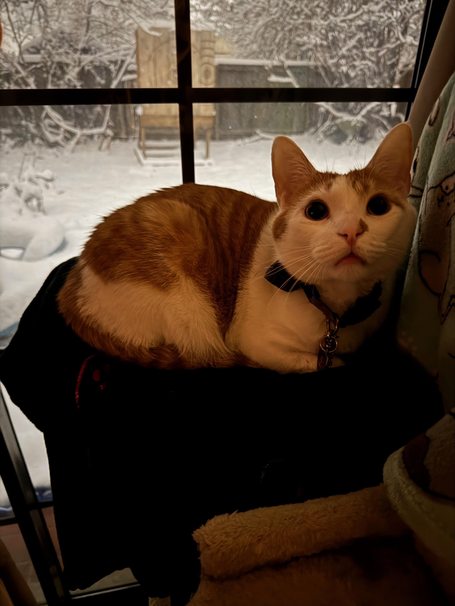
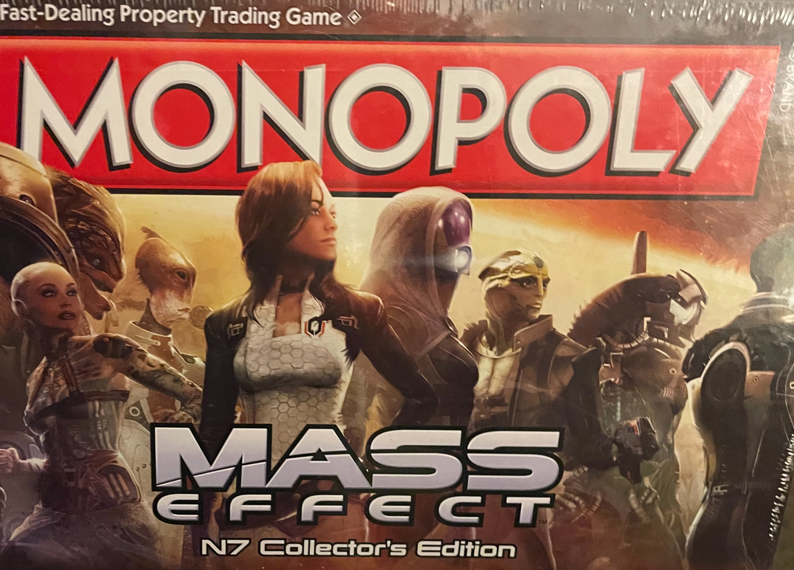

When I'm taking a break from improving and refining my web development skills, I try to keep a good work-life balance. The following are things I am interested in and enjoy doing in my free time.
CatsI have 3 cats who are my entire world! Their names are "Wolfie, Salem, and Jaskier. |
||
|
Wolfie is turning 10 this year! He was born with an infection in his eyes that caused one of them to fall out and the other to be completely blind in. He has perservered and is the sweetest little purry man. His purrs can get so loud! Unfortunately, he also has trouble with a tummy sensitivity so he gets special food but that doesn't stop him from trying to eat everything that falls on the kitchen floor! He was the first of our cats to ever have to have a cone (when he got fixed), so we started calling him Conehead. 🤣 This eventually managed to evolve in to calling him Puppyhead somehow! He loves throwing himself on the floor and rolling around so we will pet his belly or give him treats. 🥹 Puppyhead can also catch a fly out of thin air! 😎  |
Salem is turning 7 this year and he is the most mischievous of the bunch. He is a black cat. He is the best cuddle bug of all 3. He demands pets at all times and will even know your phone out of your hand just to say "Hey! Pet me right mewo!." Salem is the most vocal and will meow at you if you meow back at him! 🥰 He is the most likely to try and steal your food if you aren't looking and escape out the front door if you aren't careful! He's the reason all 3 of our cats now have airtags on their collars! Sometimes, Salem decides he wants to burrow under the covers and we can't find him for hours! We've learned to check under the covers before we lay down on the bed. 😅 He wants to go in the bathroom when we're taking a shower but then he just yells at us the entire time and wants to leave like it wasn't his idea to go in there. 🙄  |
Jaskier is turning 2 at the end of this year and he is the most amount of energy I've ever had in a cat! He is a white and orange menace! He loves to play and sometimes annoys the other cats when they don't want to play but he does. 🤭 We got Jaskier after my soulmate and bestfriend, Sunny, passed away. My husband picked out Jaskier as a little 4 month old troublemaker who was trying to eat his shoelaces at the animal shelter. 🥹 He has the same striping on his tail that Sunny had and we think Sunny led us to this sweet and amazing little ball of fur. We see so much of Sunny in him. He's the typical cat who only likes things if it's his idea. Even if he wants to sit somewhere or play with something but you put him there first, he's not interested. 😂 Jaskier really helped us heal our hearts and we thank Sunny every day for him.  |
Video GamesI love playing video games! I have been playing video games since I was a kid. I enjoy playing a variety of games, from RPGs to shooters to puzzle games. Some of my favorite games include the original Mass Effect Trilogy, No Mans Sky, and the Sims. I love getting lost in a good story and exploring new worlds. I also enjoy playing games with my friends and family. I am always looking for new games to play and I am excited to see what the future holds for the gaming industry. |
 |
Axe ThrowingI discovered axe and knife throwing in 2018 and I loved it! I didn't discover competative axe throwing until the end of 2022 and I've been throwing in leagues and tournaments ever since. I love the thrill of hitting the target exactly where I want it to. It is a great way to relieve stress and the BEST PART is having fun throwing with friends! My main event is knives, where I won 3rd place in a tournament last July! I have been practicing my technique and I hope to compete in the World Axe and Knife Throwing Championship some day! |